Manual das Viagens
Passo a passo completo das Viagens, com fotos: o quadro, como montar o roteiro e o orçamento, a aprovação, o que cada setor preenche em Provisionamento (com a liberação da verba pelo Financeiro e a fila de Pendências), o aviso de saída próxima e de conflito, a ficha da equipe, a volta, o custo real com comprovantes, a Agenda, o relatório de Custos e a Frota com manutenção. Atualizado em 04/11/2026.
Parte 1Antes de começar
Para quem é este manual
Este manual é para quem monta, aprova ou prepara viagens de equipe: levar a equipe da fábrica até o cliente para instalar, ajustar ou treinar. Ele mostra cada tela, o que cada botão faz, o que o sistema grava quando você clica e para onde a viagem vai depois.
Todas as fotos usam dados de exemplo (clientes, cidades, veículos e nomes inventados). Nenhuma viagem real aparece aqui.
Como cada passo a passo está escrito
- Quando usar: a situação em que você precisa daquele passo.
- Quem faz: quem tem o botão (quem monta, a direção, a Adaptação, o Comercial ou o Financeiro).
- Passo a passo: os cliques, na ordem.
- O que acontece: o que o sistema grava e quem é avisado.
- Vai para: a coluna seguinte do quadro.
A viagem em uma página
Uma viagem é uma ida da equipe até o cliente e a volta. Ela nasce com o roteiro e o orçamento, é aprovada pela direção, ganha a parte de cada setor (equipe e carro, contrato, dinheiro), acontece e, no fim, tem o custo real conferido contra o orçado.
- Aberta
- Em aprovação
- Provisionamento
- Andamento
- Finalizada
| Coluna | O que significa | Quem age |
|---|---|---|
| Aberta | O roteiro e o orçamento estão sendo montados | Quem tem a aba Viagens |
| Em aprovação | Espera a direção aprovar ou recusar | Direção (Admin e gerentes) |
| Provisionamento | Aprovada: cada setor preenche a sua parte | Adaptação, Comercial e Financeiro |
| Andamento | A equipe saiu e está viajando | Adaptação (informa a volta) |
| Finalizada | A equipe voltou e a viagem foi encerrada | Financeiro lança o custo real |
| Não aprovada | A direção recusou (pede um motivo); pode ser reaberta | Quem montou |
Voltar uma viagem de coluna, recusar ou reabrir sempre pede um motivo, que fica no histórico da viagem.
Quem é quem
| Quem | O que faz na viagem |
|---|---|
| Quem tem a aba Viagens | Monta o roteiro e o orçamento, envia para aprovação, vê todas as partes, usa a Agenda, o relatório de Custos e a Frota |
| Direção (Admin e gerentes; a equipe do Comercial e das Licitações vale como gerente do setor) | Aprova ou recusa, volta uma viagem já aprovada, reabre uma finalizada |
| Adaptação | Escolhe a equipe, o veículo da frota e o km de saída; marca que a equipe saiu e voltou; informa o km de volta |
| Comercial | Descreve o serviço, anota o contrato e sobe os arquivos do contrato |
| Financeiro | Libera a verba, define o pedágio e o hotel, lança o custo real e anexa os comprovantes |
Palavras que aparecem na tela
| Palavra | O que significa |
|---|---|
| Roteiro | O ponto de saída, as paradas e quantos dias a equipe fica em cada uma |
| Rota | O caminho calculado pelo sistema: km, tempo de direção e trechos |
| Roteiro dia a dia | A rota desenhada dia por dia: onde a equipe anda, onde dorme e onde trabalha |
| Orçado | O custo que o sistema calcula antes de a viagem sair |
| Verba | O dinheiro que o Financeiro libera para a equipe levar |
| Custo real | O que a viagem custou de fato, lançado depois pelo Financeiro |
| Frota | O cadastro dos veículos da empresa usados em viagem |
| Comprovante | A nota ou o recibo de um item do custo real |
Parte 2A tela de Viagens
Visão geral
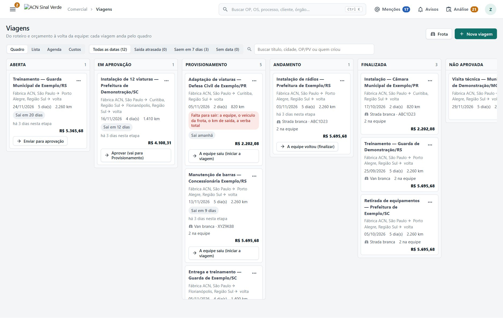
No alto ficam o título e dois botões: Frota (cadastro dos veículos) e Nova viagem (botão verde). Logo abaixo ficam a forma de ver, os filtros e a busca; depois, o quadro.
Barra do alto
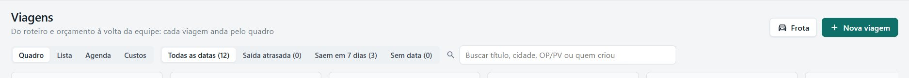
- Forma de ver: Quadro (as colunas), Lista (uma linha por viagem), Agenda (quem está onde, por dia) e Custos (relatório de custo real × orçado).
- Filtro de data de saída: Todas as datas, Saída atrasada (a data passou e a equipe não saiu), Saem em 7 dias e Sem data. O número entre parênteses é quantas viagens cabem em cada filtro.
- Busca: procura no título, nas cidades, na OP ou PV ligados e em quem criou a viagem.
O cartão da viagem
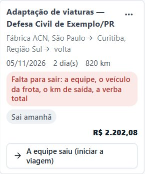
Cada viagem é um cartão. De cima para baixo:
- Título e o menu ⋯.
- O caminho: do ponto de saída às paradas, e a palavra volta quando é ida e volta.
- Data de saída, dias da viagem e km.
- Selo de saída: "Sai amanhã", "Sai em N dias" ou, em vermelho, "Saída atrasada há N dia(s)".
- Selo vermelho "Falta para sair: …": aparece em Provisionamento quando a saída está a 2 dias ou menos e ainda falta alguma parte (veja o aviso de saída próxima).
- "há N dias nesta etapa": há quanto tempo a viagem está na coluna.
- Veículo, placa e quantas pessoas na equipe (quando já foram escolhidos).
- O valor orçado, em negrito.
- O botão do próximo passo (por exemplo, Enviar para aprovação ou A equipe saiu), só se você pode dar aquele passo.
O menu ⋯ do cartão
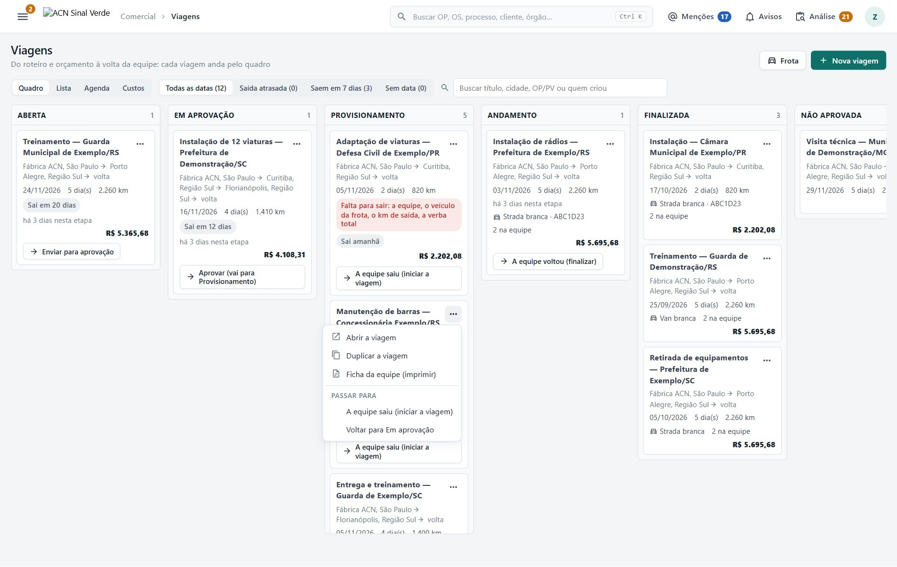
| Item | O que faz |
|---|---|
| Abrir a viagem | Abre a janela da viagem |
| Duplicar a viagem | Abre uma nova viagem com o mesmo roteiro (veja Duplicar uma viagem) |
| Ficha da equipe (imprimir) | Só a partir de Provisionamento: a folha que a equipe leva |
| Passar para… | Os passos que você pode dar: avançar, voltar (com motivo), recusar (com motivo) ou reabrir (com motivo) |
Arrastar o cartão
Você também pode arrastar o cartão para outra coluna. É o mesmo passo do botão: o sistema confere o que falta, pede o motivo quando for o caso e, se não puder, diz por quê. Só grava se a viagem ainda estiver na coluna que você viu: se outra pessoa mexeu antes, o sistema avisa e não passa por cima.
A Lista
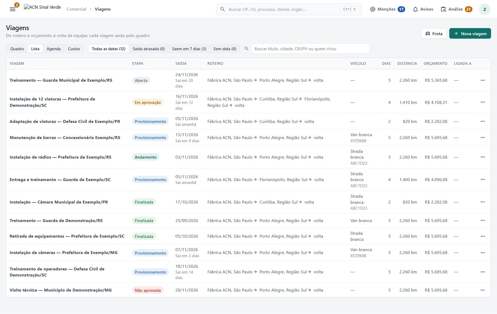
A Lista mostra as mesmas viagens em linhas, com as mesmas ações no menu ⋯. É a visão para procurar uma viagem específica ou ver tudo de uma vez, sem rolar o quadro. Clicar na linha abre a viagem.
De onde a viagem vem
- Pela aba Viagens, no botão Nova viagem: você monta o roteiro, calcula a rota e envia para aprovação.
- Duplicando outra viagem, quando a mesma rota sai de novo.
- Sozinha, pela OP de Adaptação externa: quando o Almoxarifado fecha o kit dessa OP, o sistema cria a viagem já em Em aprovação, com o destino da OP anotado e a OP ligada. Uma viagem por lote e destino: as OPs do mesmo lote que vão ao mesmo lugar entram na mesma viagem.
Parte 3Passo a passo: da montagem à aprovação
Montar a viagem (Nova viagem)
Quando usar: uma equipe vai sair da fábrica para um cliente.
Quem faz: quem tem a aba Viagens.
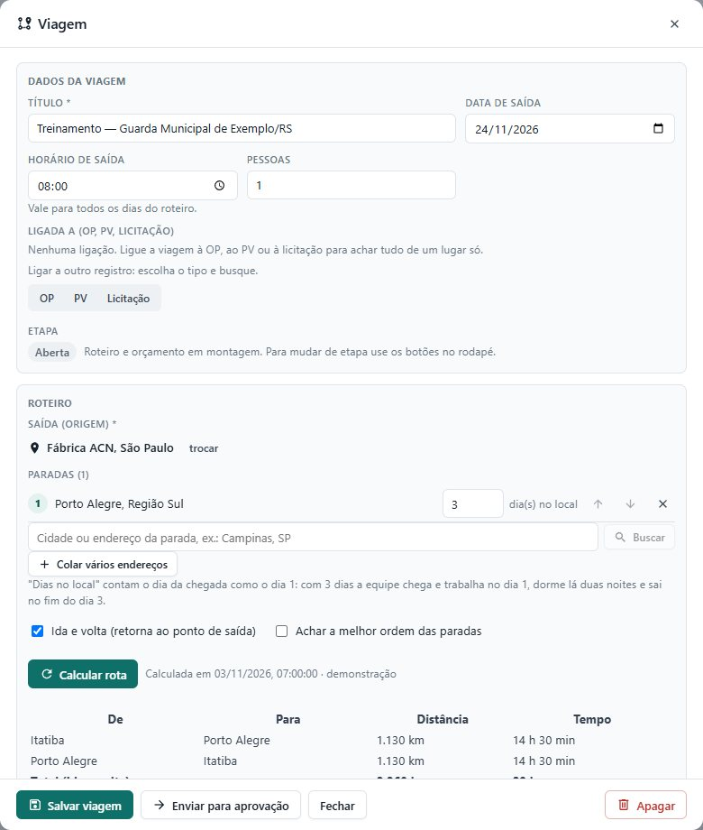
Passo a passo
- Na tela de Viagens, clique em Nova viagem (botão verde, no alto à direita). A janela Viagem abre vazia.
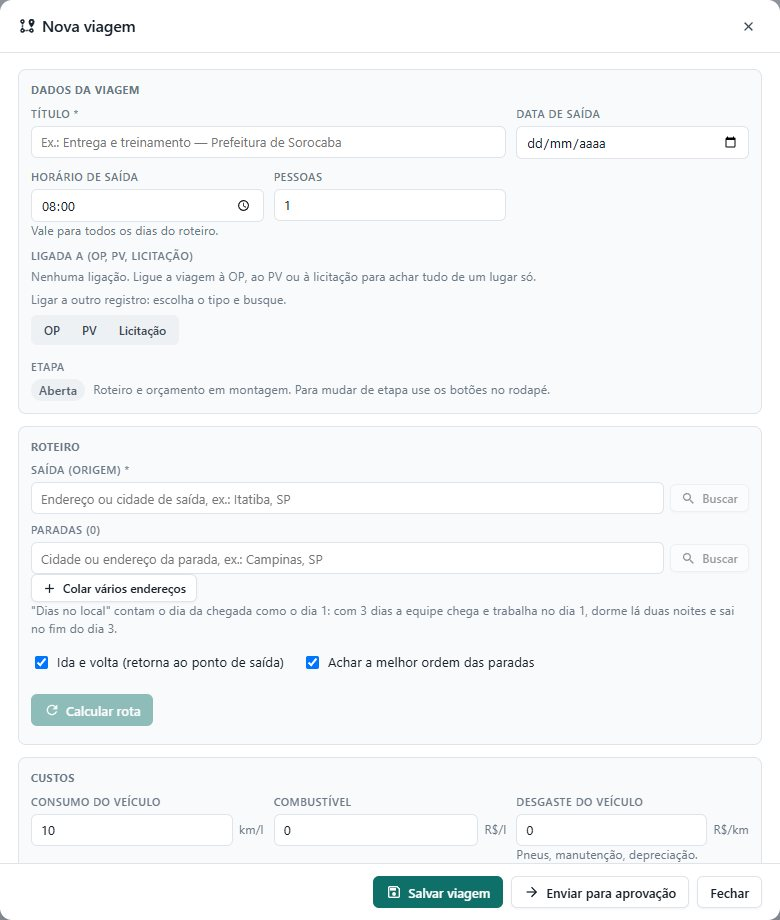
A janela Nova viagem, vazia - Dados da viagem. Preencha:
- Título*: o nome que aparece no cartão (por exemplo, "Instalação de 12 viaturas — Prefeitura de Demonstração/SC").
- Data de saída e Horário de saída: o horário vale para todos os dias do roteiro.
- Pessoas: quantas pessoas vão (entra na conta da alimentação).
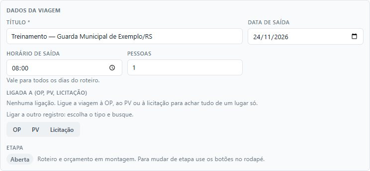
Bloco Dados da viagem - Ligada a (OP, PV, Licitação). Escolha o tipo (OP, PV ou Licitação), busque e clique no registro. Pode ligar mais de uma coisa. Clicar numa ligação abre o registro (se houver algo não salvo na viagem, o sistema pergunta antes). As OPs que geraram a viagem sozinhas aparecem com "gerou a viagem" e não se tiram à mão.
- Roteiro. Veja o próximo tópico.
- Custos e Orçamento. Veja os tópicos seguintes.
- Clique em Salvar viagem.
O que acontece: a viagem é gravada em Aberta, com você como quem criou, e aparece no quadro.
Vai para: nada muda de coluna; quando estiver pronta, use Enviar para aprovação.
Roteiro e rota
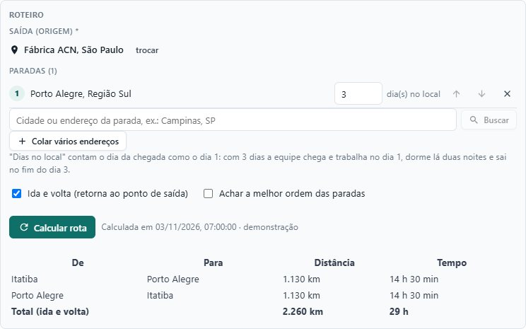
- Saída (origem): busque o ponto de saída (a fábrica, em geral) digitando a cidade ou o endereço e clique no candidato certo. O botão trocar muda o ponto.
- Paradas: busque cada parada do mesmo jeito e clique em Buscar. Para cada uma diga quantos dias no local a equipe fica. As setas ↑ ↓ mudam a ordem e o × tira a parada. Colar vários endereços abre uma caixa para colar uma lista (um endereço ou cidade por linha): o sistema busca todos, mostra o local achado para cada um (você pode trocar o candidato) e as linhas que não achou voltam para a caixa; clique para adicionar os achados como paradas.
- Escolha as opções:
- Ida e volta (retorna ao ponto de saída): marcada por padrão.
- Achar a melhor ordem das paradas: o sistema reorganiza as paradas para o caminho ficar mais curto.
- Clique em Calcular rota. O sistema mostra, trecho a trecho, a distância e o tempo, e o total (ida e volta).
Roteiro dia a dia
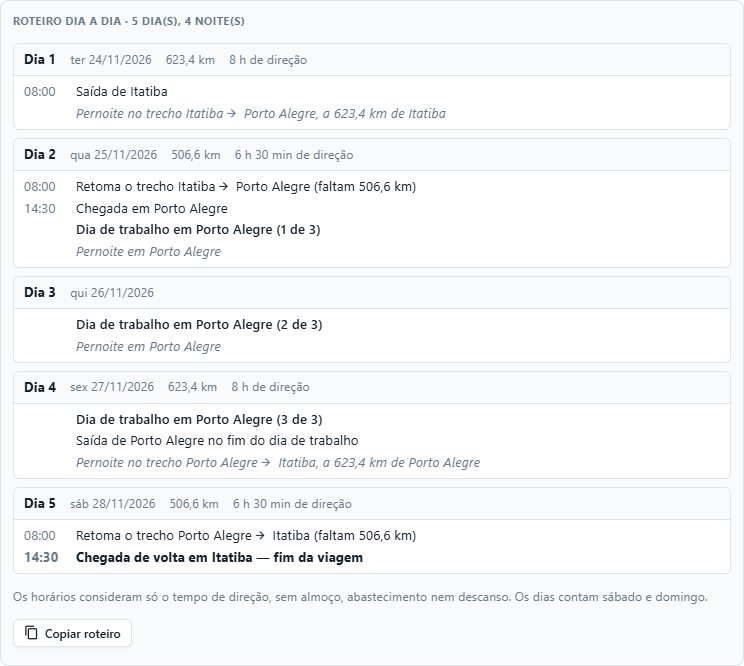
Depois de calculada a rota, o sistema desenha cada dia: a hora de saída, onde a equipe chega, onde pernoita, os dias de trabalho em cada parada e a chegada de volta. Os horários consideram só o tempo de direção, sem almoço, abastecimento nem descanso, e os dias contam sábado e domingo. O botão Copiar roteiro copia o texto para você colar numa mensagem.
Custos e orçamento
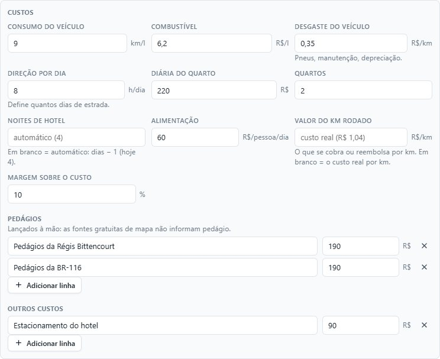
Os campos de Custos alimentam a conta do orçamento:
| Campo | Para que serve |
|---|---|
| Consumo do veículo (km/l) e Combustível (R$/l) | Custo do combustível pelo km da rota |
| Desgaste do veículo (R$/km) | Pneus, manutenção, depreciação. É custo calculado, não sai dinheiro |
| Direção por dia (h/dia) | Quantas horas a equipe dirige por dia: define os dias de estrada |
| Diária do quarto e Quartos | A hospedagem |
| Noites de hotel | Em branco = automático (dias − 1) |
| Alimentação (R$/pessoa/dia) | Vezes as pessoas e os dias |
| Valor do km rodado | O que se cobra ou reembolsa por km. Em branco = o custo real por km |
| Margem sobre o custo (%) | Entra no valor do orçamento |
| Pedágios e Outros custos | Linhas lançadas à mão (Adicionar linha): as fontes gratuitas de mapa não informam pedágio |
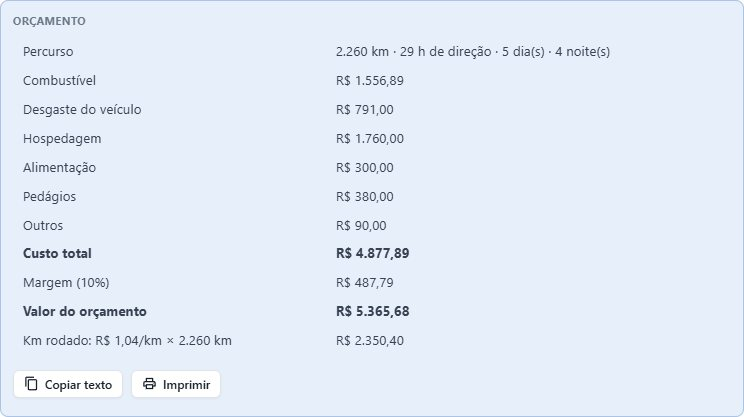
O quadro Orçamento mostra o percurso (km, horas de direção, dias e noites), cada custo e o total. O mesmo valor aparece em negrito no cartão.
Enviar para aprovação
Quando usar: o roteiro e o orçamento estão prontos.
Quem faz: quem tem a aba Viagens.
- Abra a viagem (Aberta) e clique em Enviar para aprovação, no rodapé da janela, ou no botão do cartão.
- Se algo faltar, o sistema diz o quê: para ir à aprovação a viagem precisa de título, data de saída, ponto de saída, pelo menos uma parada e a rota calculada e atualizada.
O que acontece: a viagem passa para Em aprovação e fica no histórico.
Vai para: Em aprovação, com a direção.
Aprovar ou recusar
Quem faz: a direção (Admin e gerentes; a equipe do Comercial e das Licitações vale como gerente do setor).
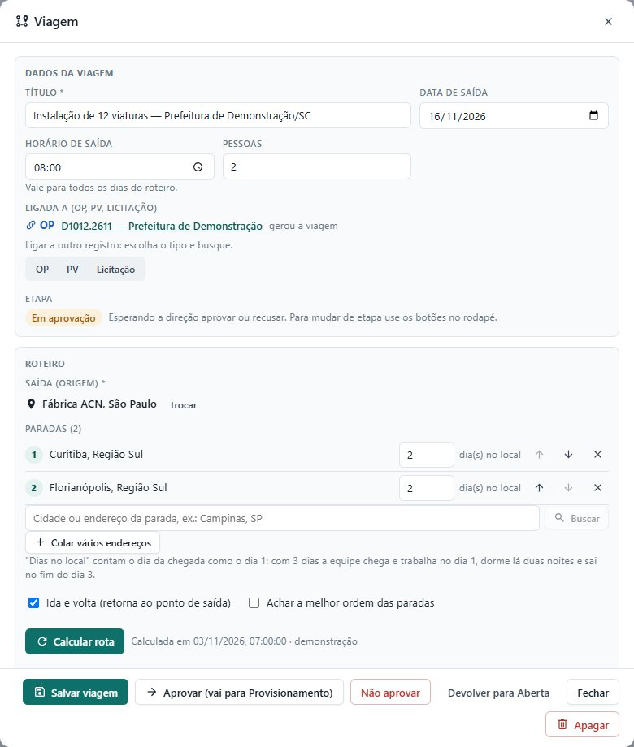
- Abra a viagem em Em aprovação: pelo quadro ou pela caixa de Menções (quando a viagem nasce de uma OP, quem aprova recebe um aviso).
- Confira o roteiro, os custos e o orçamento.
- Use um dos botões do rodapé:
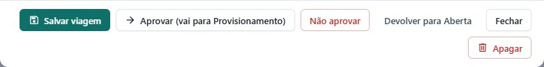
- Aprovar (vai para Provisionamento)
- Não aprovar: pede o motivo, que fica no histórico.
- Devolver para Aberta: pede o motivo; quem montou ajusta e envia de novo.
Vai para: Provisionamento, Não aprovada ou Aberta.
Parte 4Passo a passo: Provisionamento e a saída
Preencher a sua parte em Provisionamento
Quando a viagem é aprovada, o sistema avisa na caixa de Menções cada setor com o que falta (Adaptação e Financeiro: quem tem aquela aba; Comercial: o vendedor ou responsável comercial da OP, ou quem criou a viagem). Quem não tem a aba Viagens abre a viagem direto pelo aviso, por cima de qualquer tela, e preenche só a parte do seu setor; o resto fica só para leitura.
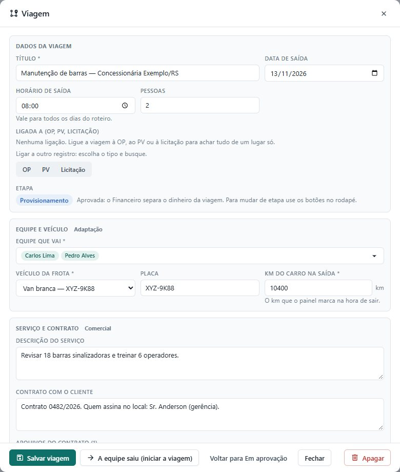
Cada pessoa grava só o grupo que pode editar, e cada setor deixa uma linha no histórico: quem salva a parte de um não apaga o que o outro preencheu.
| Setor | O que preenche |
|---|---|
| Adaptação | Equipe que vai, veículo da frota (a placa vem do veículo), km do carro na saída |
| Comercial | Descrição do serviço, observações do contrato e os arquivos do contrato |
| Financeiro | Verba total, pedágio (reembolso ou convênio) e os dados do hotel |
Parte da Adaptação: equipe e veículo
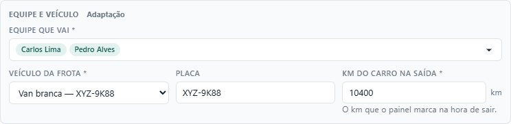
- Equipe que vai*: abra a lista e escolha as pessoas (aparecem como etiquetas).
- Veículo da frota*: escolha o veículo; a placa vem sozinha. O veículo vem do cadastro da Frota.
- Km do carro na saída*: o que o painel marca na hora de sair. Ao escolher o veículo, o sistema sugere o km do cadastro.
- Clique em Salvar viagem.
Parte do Comercial: serviço e contrato
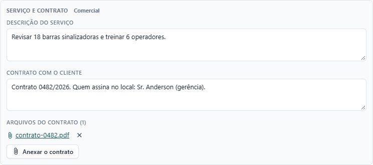
- Descrição do serviço: o que a equipe vai fazer no local.
- Contrato com o cliente: número do contrato, cláusulas que a equipe precisa saber, quem assina no local.
- Arquivos do contrato: clique para anexar. O arquivo sobe e fica ligado à viagem na hora, sem precisar salvar.
Parte do Financeiro: verba, pedágio e hotel
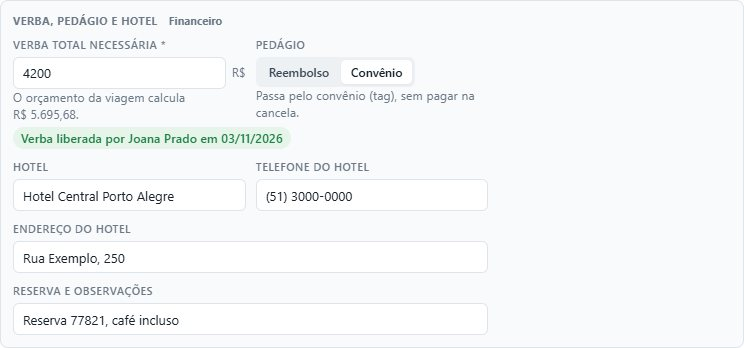
- Verba total*: o dinheiro que a equipe vai levar. Digite o valor e salve a viagem.
- Liberar verba: com o valor salvo, clique em Liberar verba e confirme. O sistema guarda quem liberou, quando e quanto. A equipe só sai com a verba liberada.
- Pedágio: Reembolso (a equipe paga e depois pede o reembolso) ou Convênio (passa pela tag, sem pagar na cancela).
- Hotel: nome, telefone, endereço e reserva/observações.
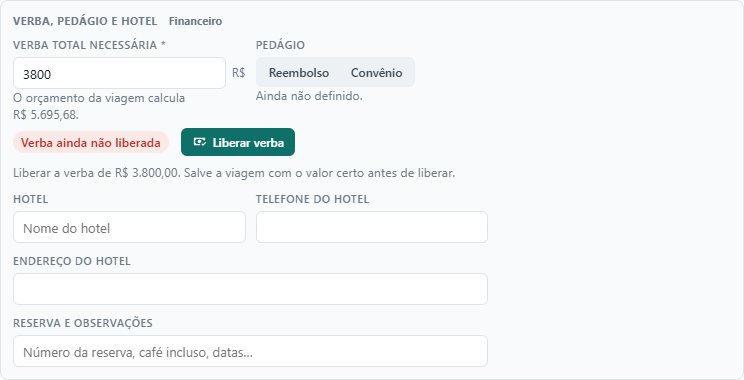
A parte mostra sempre o estado da verba: "Verba liberada por Fulano em dd/mm" (verde) ou "Verba ainda não liberada" (vermelho, com o botão). Se o Financeiro mudar o valor depois de liberar, a liberação deixa de valer sozinha: o aviso passa a dizer "A verba mudou depois de liberada" e é preciso liberar de novo. Se houver alteração ainda não salva na viagem, o botão pede que você salve antes (a liberação vale o valor que está gravado).
A fila do Financeiro: aba Pendências
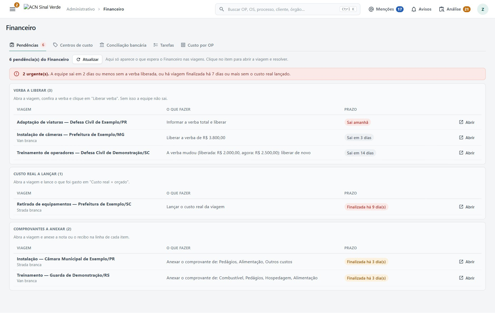
Em Financeiro > Pendências fica a lista do que espera o Financeiro nas viagens. A aba mostra o número de itens (em vermelho quando há urgente). A fila só lista: clique na linha, ou em Abrir, e a janela da viagem abre para você resolver ali mesmo.
| Grupo | O que é | Fica vermelho quando |
|---|---|---|
| Verba a liberar | Viagem em Provisionamento sem verba, com a verba lançada e não liberada, ou com a verba mudada depois de liberar | A equipe sai em 2 dias ou menos (ou a data já passou) |
| Custo real a lançar | Viagem finalizada sem nenhum valor no custo real | Está finalizada há 7 dias ou mais |
| Comprovantes a anexar | Viagem finalizada com custo lançado e algum item sem comprovante | Nunca: é lembrete (âmbar) e não trava nada |
Quando o item é resolvido e você fecha a janela, a lista se atualiza. Aprovações de compras, de frete e de cotações continuam onde estavam (Compras e Logística); a fila do Financeiro é só das viagens.
Aviso de saída próxima
Quando a viagem está em Provisionamento, falta 2 dias ou menos para a saída (ou a data já passou) e ainda falta alguma parte, o cartão ganha o selo vermelho "Falta para sair: …", dizendo o que falta (equipe, veículo da frota, km de saída ou a liberação da verba). Na janela da viagem, as partes que faltam aparecem vazias (equipe, veículo, km de saída, verba liberada):
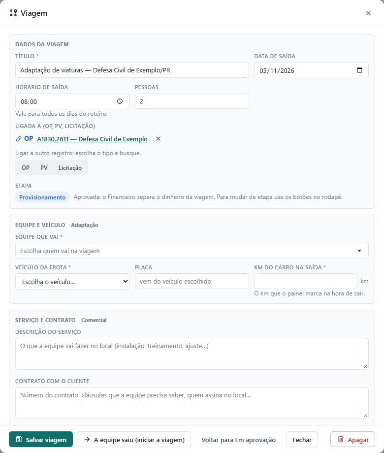
Além do selo, o sistema avisa na caixa de Menções, de segunda a sexta às 8h: a Adaptação (se falta a parte dela) e o Financeiro (se falta a verba ou a liberação dela). O aviso vai uma vez só por viagem e some sozinho quando a viagem sai de Provisionamento.
Aviso de conflito de datas
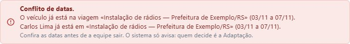
Ao escolher a equipe e o veículo, o sistema confere as outras viagens que ainda ocupam gente e carro (de Aberta até Andamento). Se a mesma pessoa ou o mesmo veículo estiver em outra viagem com datas que se sobrepõem, aparece uma faixa vermelha dizendo qual viagem e quais dias. Ao clicar em A equipe saiu, o sistema pergunta de novo se quer iniciar mesmo assim.
Imprimir a ficha da equipe
Quando usar: antes de a equipe sair.
Quem faz: quem tem a aba Viagens.
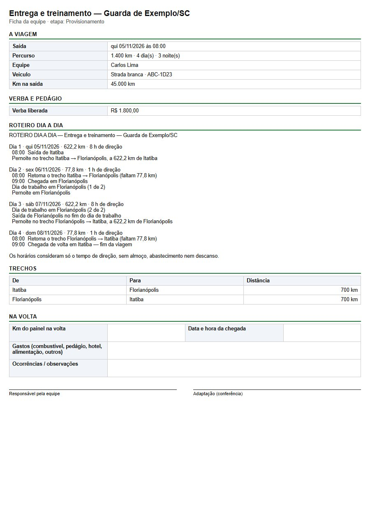
Com a viagem em Provisionamento ou depois, clique em Ficha da equipe: na janela da viagem, ao lado de Imprimir, ou no menu ⋯ do cartão. Sai uma folha com:
- a saída, o percurso, a equipe, o veículo e o km de saída;
- a verba liberada e o pedágio;
- o roteiro dia a dia e os trechos;
- no pé, espaços para escrever à mão o km na volta, a data e hora da chegada, os gastos, as ocorrências, e as linhas de assinatura (responsável pela equipe e conferência da Adaptação).
A ficha não leva o orçamento nem a margem.
A equipe saiu
Quem faz: quem tem a aba Viagens (em geral, a Adaptação).
- Confira o aviso de conflito (se houver).
- Clique em A equipe saiu (iniciar a viagem), no cartão ou no rodapé da janela.
- Se faltar algo, o sistema diz o quê e não grava.
O que acontece: a viagem passa para Andamento e o histórico ganha a linha. A equipe e o carro continuam ocupados na Agenda.
Vai para: Andamento.
Parte 5Passo a passo: volta e fechamento
A equipe voltou
Quem faz: a Adaptação informa o km de volta; quem tem a aba Viagens finaliza.
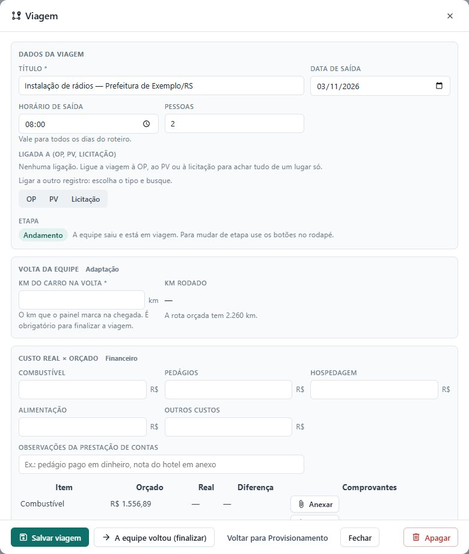
- Abra a viagem em Andamento.
- Na parte Volta da equipe, informe o Km do carro na volta.
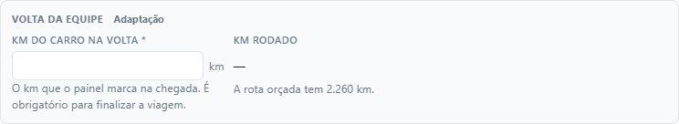
- Clique em A equipe voltou (finalizar).
O que acontece: o km de volta é obrigatório e precisa ser maior que o da saída; sem ele o sistema não finaliza e diz o que falta. Ao finalizar, o km de volta vira o km atual do veículo na frota (só se for maior que o do cadastro).
Vai para: Finalizada.
Custo real × orçado e comprovantes
Quem faz: o Financeiro.
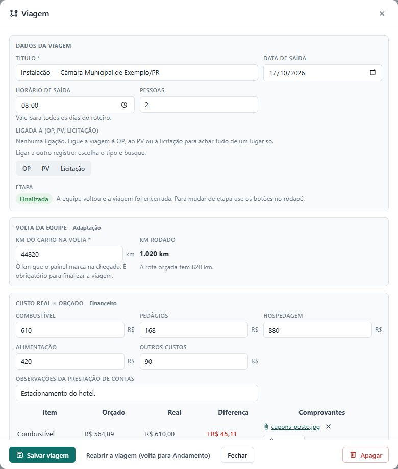
Na viagem Finalizada, a parte Custo real × orçado pede o que a viagem custou de fato:
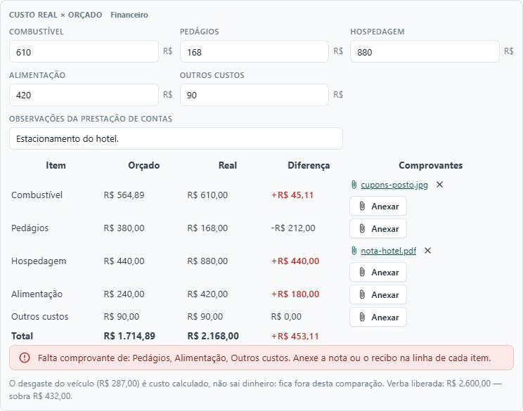
- Preencha combustível, pedágios, hospedagem, alimentação e outros custos, e, se quiser, as observações da prestação de contas.
- Na tabela, confira item por item o orçado, o real e a diferença (em vermelho quando passou do orçado). A última linha traz o total. Embaixo, o sistema compara com a verba liberada e diz se sobrou ou faltou.
- Na coluna Comprovantes, clique em Anexar na linha do item e escolha a nota ou o recibo (até 20 MB por arquivo; pode anexar mais de um). O arquivo sobe e fica ligado à viagem na hora, sem precisar salvar. O × ao lado do nome tira o arquivo da lista (ele continua guardado no armazenamento). Clicar no nome abre o arquivo.
- Clique em Salvar viagem para gravar os valores.
O que acontece: item com valor lançado e sem comprovante ganha a faixa vermelha "Falta comprovante de: …". É só um lembrete: não trava nada. O custo real também não trava a finalização, porque a prestação de contas costuma chegar depois; a viagem finalizada sem custo lançado aparece em vermelho no relatório de Custos.
Parte 6Passo a passo: outras ações
Voltar uma etapa, recusar e reabrir
- Devolver para Aberta (de Em aprovação): quem montou ajusta e envia de novo.
- Voltar para Em aprovação (de Provisionamento) e Voltar para Provisionamento (de Andamento): só a direção.
- Reabrir a viagem (volta para Andamento) (de Finalizada): só a direção, para corrigir algo depois de finalizar.
- Reabrir (volta para Aberta) (de Não aprovada).
Todos pedem o motivo, que fica no histórico da viagem. Nada se apaga.
Duplicar uma viagem
Quando usar: a mesma rota sai de novo (uma instalação em outra data, por exemplo).
Quem faz: quem tem a aba Viagens.
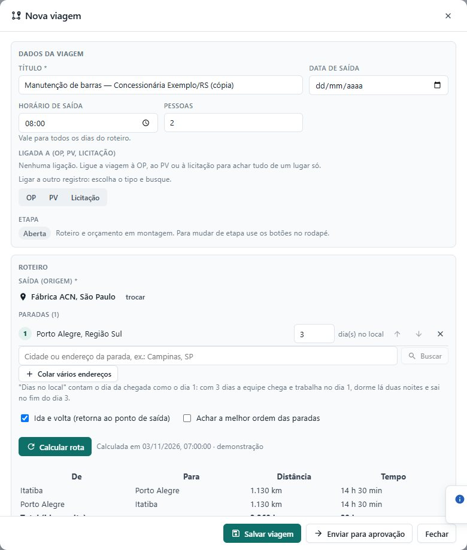
- No menu ⋯ do cartão (ou da linha, na Lista), clique em Duplicar a viagem.
- Abre uma nova viagem com o título "(cópia)", as pessoas, o roteiro, a rota e os custos orçados.
- Confira a data de saída (que vem vazia) e ajuste o que precisar.
- Clique em Salvar viagem.
O que não vai na cópia: a data, as ligações com OP/PV/licitação, a equipe, o veículo, os km, a verba, o hotel, o serviço, o contrato, o custo real, os comprovantes e o histórico. Nada é gravado até você clicar em Salvar viagem: se fechar a janela, nada acontece.
Apagar uma viagem
O botão Apagar (vermelho, no rodapé da janela) existe só para Admin e gerentes e para quem criou a viagem. O sistema pergunta antes e não dá para desfazer.
Quando a OP da viagem volta ou é cancelada
Se uma OP ligada à viagem for cancelada ou devolvida (ao PCP ou ao Comercial), a viagem ganha uma nota no histórico e quem aprova recebe um aviso na caixa de Menções para conferir se a viagem ainda faz sentido. O sistema não muda a viagem sozinho.
Abrir a viagem pelo aviso de Menções
Quando você recebe uma Menção de viagem (por exemplo, "a viagem foi aprovada e falta a sua parte"), o clique abre a janela da viagem por cima da tela em que você está, mesmo que você não tenha a aba Viagens. Aparece uma faixa avisando que você pode preencher só a parte do seu setor; o resto fica só para leitura.
Parte 7Agenda, custos e frota
A Agenda
Quando usar: antes de escolher o carro e a equipe de uma viagem nova, ou para ver quem está onde nas próximas semanas.
Quem usa: quem tem a aba Viagens.
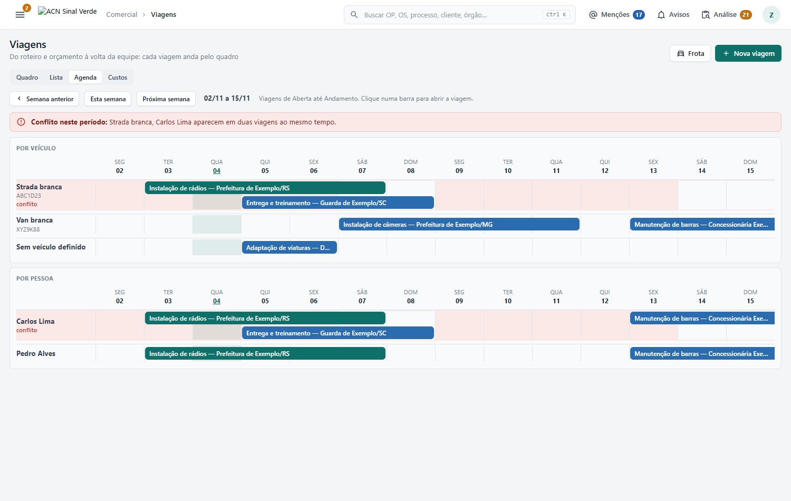
No alto da tela, clique em Agenda. Ela mostra 14 dias (começando numa segunda-feira) em dois blocos:
- Por veículo: uma linha para cada veículo ativo da frota, mais a linha "Sem veículo definido".
- Por pessoa: uma linha para cada pessoa que aparece na equipe de alguma viagem.
Cada viagem é uma barra nos dias que ocupa. A cor da barra mostra a coluna em que a viagem está (por exemplo, verde para Andamento). Clicar numa barra abre a viagem.
- Entram as viagens de Aberta até Andamento, com data de saída. Finalizada e Não aprovada ficam de fora.
- Os dias de fim de semana têm fundo cinza e o dia de hoje vem sublinhado.
- Conflito: duas barras da mesma linha que se sobrepõem ficam uma embaixo da outra, a linha ganha a palavra conflito em vermelho e uma faixa vermelha no alto lista quem aparece em duas viagens ao mesmo tempo.
- A linha "Sem veículo definido" reúne as viagens que ainda não têm carro da frota. Ela nunca marca conflito (não se sabe de qual carro se trata).
- Os botões Semana anterior, Esta semana e Próxima semana mudam o período.
O relatório de Custos
Quando usar: conferir o que as viagens custaram contra o orçado.
Quem usa: quem tem a aba Viagens (o Financeiro lança os números que alimentam o relatório).
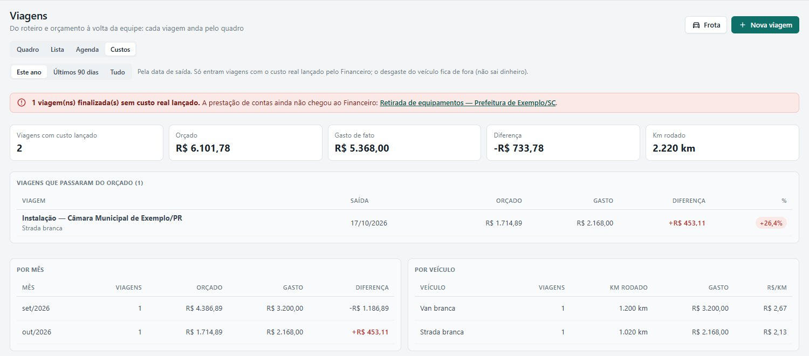
No alto da tela, clique em Custos. Escolha o período: Este ano, Últimos 90 dias ou Tudo (pela data de saída da viagem). Só entram viagens com o custo real lançado.
- Faixa vermelha: viagens finalizadas sem custo real lançado. É prestação de contas que ainda falta; clicar no nome abre a viagem.
- Os cinco números do alto: viagens com custo lançado, o orçado, o gasto de fato, a diferença e o km rodado.
- Viagens que passaram do orçado: com a diferença em reais e em porcentagem.
- Por mês e por veículo: quantas viagens, o orçado, o gasto, o km rodado e o custo por km.
A Frota
Quando usar: cadastrar um veículo novo, desativar um que saiu de uso ou ver o histórico de km e as manutenções.
Quem faz: quem tem a aba Viagens.
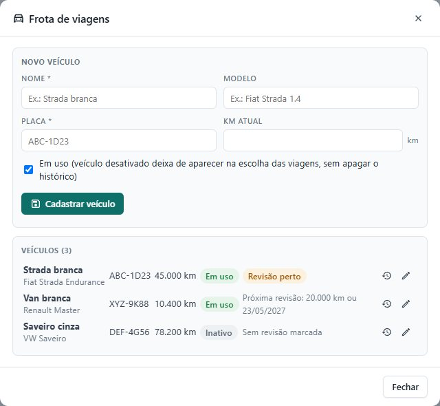
O botão Frota, no alto da tela, abre o cadastro dos veículos de viagem.
Cadastrar um veículo
- Em Novo veículo, preencha Nome* (por exemplo, "Strada branca"), Modelo, Placa* (formato ABC-1234 ou ABC-1D23) e o Km atual.
- Deixe Em uso marcado (um veículo desativado deixa de aparecer na escolha das viagens, sem apagar o histórico).
- Clique em Cadastrar veículo. Duas placas iguais não entram.
Na lista Veículos, cada linha mostra o nome, o modelo, a placa, o km atual, se está Em uso ou Inativo e o aviso de revisão. O ícone de relógio abre o histórico e o lápis edita o cadastro.
Histórico e manutenção do veículo
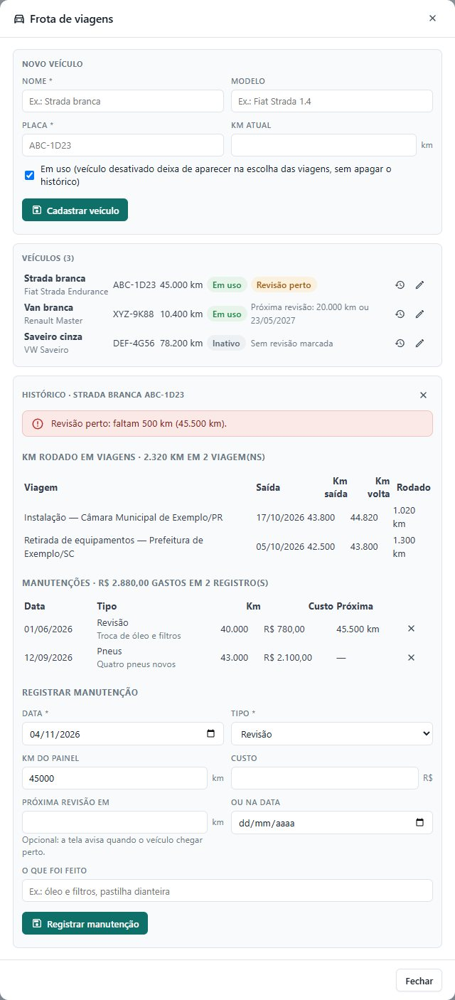
O ícone de relógio ao lado do veículo abre:
- Km rodado em viagens: as viagens finalizadas daquele veículo, com km de saída, km de volta, o rodado e o total.
- Manutenções: data, tipo, o que foi feito, km do painel, custo e a próxima revisão.
Registrar manutenção
- No histórico, em Registrar manutenção, preencha a Data*, o Tipo* (revisão, óleo, pneus, freios, elétrica, funilaria, outro), o km do painel, o custo e o que foi feito.
- Se quiser o aviso de revisão, preencha a próxima revisão por km, por data ou pelos dois.
- Clique em Registrar manutenção.
A data não pode ser no futuro; para agendar uma revisão, use a próxima revisão. O × ao lado de uma manutenção serve para registro lançado por engano.
Aviso de revisão
Na lista da frota o veículo ganha um selo quando a revisão está perto ou vencida:
- Revisão vencida (vermelho): o km atual passou do km combinado, ou a data passou.
- Revisão perto (amarelo): faltam 1.000 km ou menos, ou 15 dias ou menos.
O mesmo aviso aparece, em faixa, no histórico do veículo.
Parte 8Avisos, regras e dúvidas
Quem recebe cada aviso
Os avisos das Viagens chegam na caixa de Menções (o ícone @ no alto do sistema). Clicar no aviso abre a viagem por cima da tela em que você está.
| Quando | Quem recebe | O que diz | Quando some |
|---|---|---|---|
| A viagem nasce da OP de Adaptação externa (em Em aprovação) | Admin e os gerentes ativos | A viagem espera aprovação | Quando a viagem sai de Em aprovação |
| A viagem é aprovada (chega a Provisionamento) | Cada setor com a sua parte: Adaptação e Financeiro (quem tem a aba), Comercial (vendedor ou responsável comercial da OP, ou quem criou a viagem) | Falta a parte do seu setor | Quando a viagem sai de Provisionamento |
| Saída em 2 dias ou menos com parte faltando (segunda a sexta, 8h) | Adaptação (equipe, veículo, km) e Financeiro (verba ou liberação da verba) | O que falta para a equipe sair; uma vez só por viagem | Quando a viagem sai de Provisionamento |
| Uma OP ligada à viagem é cancelada ou devolvida | Quem aprova | Confira se a viagem ainda faz sentido (a viagem também ganha uma nota no histórico) | Fica na caixa até você tratar o aviso |
Quem pode o quê
Cada setor edita só a sua parte em Provisionamento. O Admin e os gerentes preenchem tudo. Quem tem a aba Viagens edita a base (dados, roteiro e custos).
| Parte da janela | Quem edita | Aba que libera |
|---|---|---|
| Dados da viagem, Roteiro, Custos (a base) | Quem tem a aba Viagens | Viagens |
| Equipe e veículo e Volta da equipe (km de volta) | Adaptação | Adaptação (Produção) |
| Serviço e contrato | Comercial | CRM, Licitações ou Comercial |
| Verba, pedágio e hotel (inclui o botão Liberar verba) e Custo real × orçado | Financeiro | Financeiro |
| Fila Pendências (Financeiro > Pendências) | Quem tem a aba Financeiro | Financeiro |
| Aprovar, recusar, voltar uma viagem aprovada, reabrir uma finalizada | Direção | Admin e gerentes (e a equipe do Comercial e das Licitações, que vale como gerente do setor) |
| Apagar | Admin, gerentes e quem criou a viagem | — |
Quem abre a viagem sem ter a aba Viagens vê uma faixa explicando que pode preencher só a parte do seu setor; as outras partes ficam só para leitura.
O que trava cada passo
| Passo | Só segue se… |
|---|---|
| Enviar para aprovação | Tem título, data de saída, ponto de saída, pelo menos uma parada e a rota calculada e atualizada |
| A equipe saiu | Tem equipe, veículo da frota, km de saída e a verba total liberada pelo Financeiro (e igual ao valor liberado) |
| A equipe voltou | O km de volta está preenchido e é maior que o de saída |
| Voltar, recusar ou reabrir | Você escreveu o motivo |
| Qualquer passo | A viagem ainda está na coluna que você viu (se outra pessoa mexeu antes, o sistema avisa e não grava) |
O que não trava: hotel, pedágio, descrição do serviço, contrato, o custo real e os comprovantes.
Dúvidas comuns
O botão "A equipe saiu" não deixa clicar (ou diz que falta algo). Abra a viagem: a lista diz exatamente o que falta (equipe, veículo da frota, km de saída ou a liberação da verba). Cada item é parte de um setor: a Adaptação preenche os três primeiros e o Financeiro, a verba e a liberação.
Aparece "Verba ainda não liberada" ou "A verba mudou depois de liberada". O Financeiro precisa clicar em Liberar verba (depois de salvar o valor). Se o valor mudou depois da liberação, ela perdeu a validade e é preciso liberar de novo. Para viagens que já estavam em Andamento ou Finalizadas antes desta regra, a verba conta como liberada.
Não sei quais viagens esperam o Financeiro. Abra Financeiro > Pendências: a lista reúne verba a liberar, custo real a lançar e comprovantes a anexar, com o prazo de cada uma.
Aparece "O roteiro mudou depois do último cálculo". Você mexeu na saída, nas paradas, na ordem ou em "ida e volta" depois de calcular a rota. Clique em Calcular rota de novo; o km, o tempo e os custos passam a valer.
Não acho o veículo na lista da viagem. Só veículos em uso aparecem. Abra Frota: se o veículo está Inativo, edite-o (lápis) e marque Em uso; se não existe, cadastre.
Apareceu a faixa vermelha de conflito. A mesma pessoa ou o mesmo carro está em outra viagem com datas que se sobrepõem. Veja a Agenda para escolher outro carro ou outra pessoa. O aviso não trava: se a equipe volta de manhã e sai à tarde, siga e confirme na pergunta.
A OP de Adaptação externa não aparece na fila da Produção. Ela só aparece depois que a viagem for aprovada. Veja em que coluna a viagem está; a Produção vê a faixa "N OP(s) esperam a aprovação da viagem".
Anexei um comprovante e continua aparecendo "Falta comprovante". A faixa lista os itens com valor lançado sem nenhum arquivo. Confira se o arquivo foi anexado na linha do item certo (combustível, pedágios, hospedagem, alimentação, outros).
Errei um comprovante. Clique no × ao lado do nome: o arquivo sai da lista (continua guardado no armazenamento) e você anexa o certo.
Finalizei sem lançar o custo real. Tudo bem: a finalização não exige o custo real. A viagem aparece na faixa vermelha do relatório de Custos até o Financeiro lançar.
Finalizei por engano. A direção usa Reabrir a viagem (volta para Andamento), com motivo.
A viagem foi Não aprovada. Use Reabrir (volta para Aberta), com motivo, ajuste o que a direção pediu e envie de novo.
Quero repetir uma viagem. Use Duplicar a viagem: o roteiro e os custos orçados vêm prontos; só confira a data.
Meu navegador não abre a ficha para imprimir. Ele bloqueou a janela. Libere pop-ups para o sistema e clique de novo.
Onde o sistema guarda o histórico
Toda mudança de coluna, com o motivo, quem fez e quando, fica no histórico da viagem, e cada setor deixa uma linha ao salvar a sua parte. Os arquivos (contrato e comprovantes) ficam no armazenamento do sistema, ligados à viagem. Nada se apaga sozinho: apagar uma viagem só o botão Apagar, e a pergunta avisa que não dá para desfazer.
FimHistórico deste manual
- 04/11/2026 — O Financeiro agora libera a verba: botão Liberar verba na parte do Financeiro (guarda quem, quando e quanto; vale só enquanto o valor for o mesmo) e a equipe só sai com a verba liberada. Nova aba Pendências no Financeiro, com a fila de verba a liberar, custo real a lançar e comprovantes a anexar (vermelho quando a saída é em até 2 dias ou o custo real está atrasado há 7 dias). Duas fotos novas (31 e 32).
- 04/11/2026 — Manual refeito no padrão do SAC: 30 fotos das telas (com dados de exemplo), passo a passo de cada etapa (montar a viagem, roteiro e rota, custos e orçamento, aprovar ou recusar, a parte de cada setor em Provisionamento, a saída, a volta, o custo real e os comprovantes), a Agenda, o relatório de Custos, a Frota com histórico e manutenção, quem recebe cada aviso, quem pode o quê, o que trava cada passo e as dúvidas comuns. Inclui as novidades do dia: aviso de saída próxima com parte faltando, Agenda, comprovantes e Duplicar a viagem.
- 04/11/2026 — Primeira versão: o quadro de seis colunas, o que cada setor preenche em Provisionamento (Adaptação, Comercial e Financeiro), o aviso na caixa de Menções de cada setor quando a viagem é aprovada (e a viagem abre por ali mesmo para quem não tem a aba Viagens), o aviso de conflito de veículo e de equipe, a ficha impressa da equipe, o fechamento com custo real × orçado, a aba Custos, a frota com histórico de km e manutenção, e o aviso quando a OP ligada à viagem volta ou é cancelada.